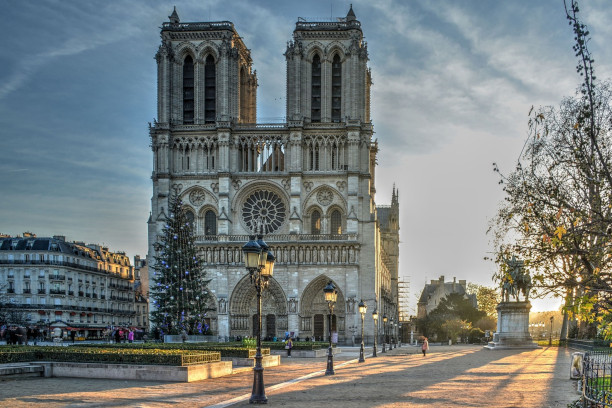
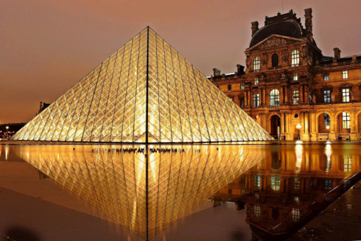
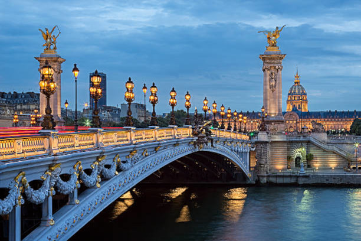
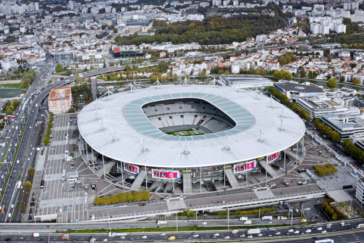

Os Jogos Olímpicos e Paralímpicos de Paris 2024 estão chegando, e a França receberá o maior evento já organizado pelo país. No dia 26 de Julho até 11 de Agosto a capital francesa contará com a presença de 206 Comitês Olímpicos Nacionais e pelo menos 14.200 atletas representando suas nações, competindo em 48 modalidades e 32 esportes. E, mesmo antes do início, o evento anunciou que teremos o mesmo número de atletas homens e mulheres, um marco histórico para o esporte olímpico.
Vamos apresentar à vocês tudo o que ocorrerá nos Jogos Olímpicos de Paris, onde será as Cerimônias de Abertura e Encerramento, os esportes e as modalidades, as instalações que receberão os atletas em busca das tão sonhadas medalhas olímpicas e muito mais!
Paris 2024
Imagem da Cidade de Paris
Cerimônia no Rio Sena
No dia 26 de Julho, o mundo todo acompanhará a cerimônia de abertura em Paris, porém não irá acontecer em um estádio olímpico e sim as margens do Rio Senna. As presentações irão acontecer ao longo do Rio mais famosa que corta a capital francesa, essa será a primeira vez que abertura ocorrerá fora de um estádio e será um marco histórico, a estimativa de público é de 300.000 pessoas presentes ao longo do percuso do Rio Senna, seja as margens, em embarcações, nas pontes que passam em cima do rio e nas arquibancadas instaladas.
Imagem do Rio Sena
A cerimônia percorrerá pelo menos 6km do Rio Senna, onde partirá da ponte de Austerlitz, ao lado do Jardim das Plantas, passando por duas ilhas no centro da cidade, a Île Saint Louis e a Île de la Cité, então passando por baixo de diversas pontes. Os atletas verão alguns dos locais oficiais dos Jogos, como a Place de la Concorde, a Esplanade des Invalides, o Grand Palais, e por fim a Ponte de Iéna, onde o desfile chega ao fim no Trocadéro, para o final da cerimônia.
-
-

Île Saint Louis
-
Île de la Cité
-

Esplanade des Invalides
-

Grand Palais
-
Jardins du Trocadéro
Ao longo do percurso, os atletas e tele espectadores poderão ver algum dos monumentos famosos:
-
 Catedral de Notre-Dame
-
 Museu do Louvre
-
Pont des Arts
-
Pont Neuf
-
 Pont Alexandre III
-
Museu D'Orsay
Já a cerimônia de Encerramento irá acontecer no dia 11 de Agosto e o palco será o Stade de France, que está localizado em Saint-Denis, que fica na Região Metropolitana de Paris, este será único evento que irá acontecer no estádio-sede.

Stade de France
Sobre as Olímpiadas
A Chama do Olímpio
A Tocha Olimpica, desenvolvida pelo designer Mathieu Lehanneur, onde na criação ele
inspirou-se em três pilares: Paris, igualdade e paz.
Segundo Lehanneur, os três pilares que ele se inspirou tem significado, onde a igualdade está representada na simetria das formas da tocha. Já Paris, está representada pelas águas Rio Sena, um local icônico e estando no coração da cidade, e a Paz foi representada a partir de pensar como o símbolo de fraternidade é generosidade.
A tocha será usada no Revezamento dos Jogos Olímpicos e Paralímpicos, a chama foi acessa em Olímpio, na Grécia, irá sair do país navegando pelo Mar Mediterrânio à bordo do Veleiro Belem, indo em direção para Marseille, no sul da França. A trajeto da tocha passrá por 400 cidades Francesas, e irá atravessar os Oceanos Atlântico, Índico e Paícfico, passando pelos territórios ultraminhos da França, são eles: Guiana Francesa, Guadalupe e Martinica, na América, a Polinésia Francesa e a Nova Caledônia, na Oceânia e a Ilha da Reunião, na África.

Os Phryges
Os Phryges são os mascotes dos Jogos Olímpicos, eles tem um forte significado para os franceses: a Liberdade. Os designers se inspiraram nos barretes frígio, uma espécie de touca ultilizada por franceses na época da Revolução Francesa e também um símbolo da República Francesa, e isso deu origem aos personagens.
Paris divulgou dois mascostes, o Phryge Olímpica e o Phryge Paralímpica, que apresenta uma deficiência física visível como forma de inclusão de pessoas com deficiência.